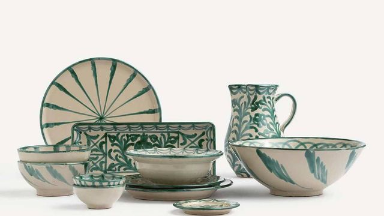
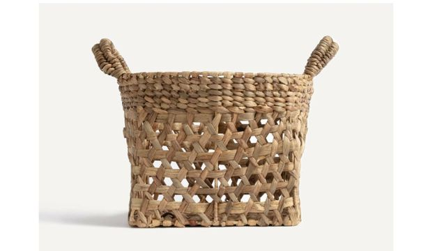
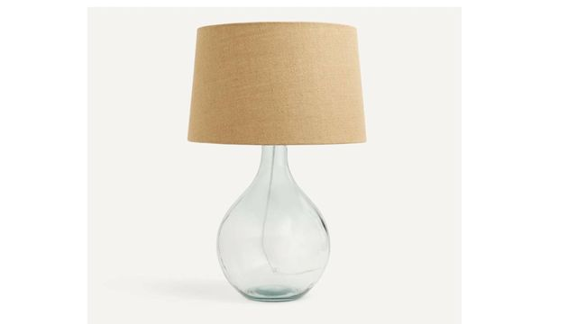
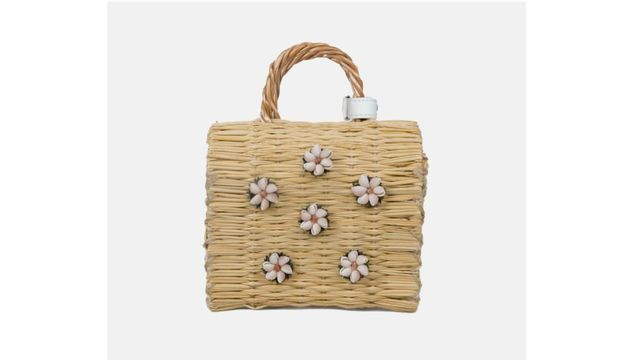

Vajilla por piezas
Los maestros artesanos de Cerámica Los Arrayanes, poseedores de una sabiduría centenaria en el arte de la alfarería, elaboran estas vajillas utilizando técnicas tradicionales como el vidriado, la cuerda seca o el esmalte. Pintadas a mano con gran virtuosismo, cada una de estas piezas son auténticas obras artesanas.
Hacé tu pedido contactandonos por Facebook o Whatsapp



Cesta mini artesanal Shella
SLas cestas y bolsos de esta marca gallega están elaborados con junco tejido a mano y adornados con porcelanas, talismanes de Sargadelos o conchas bordadas a mano. Una auténtica maravilla de la artesanía de la zona, que esta marca se encarga de preservar y popularizar a través de sus creaciones artesanales como esta bonita cesta mini.
Hacé tu pedido contactandonos por Facebook o Whatsapp